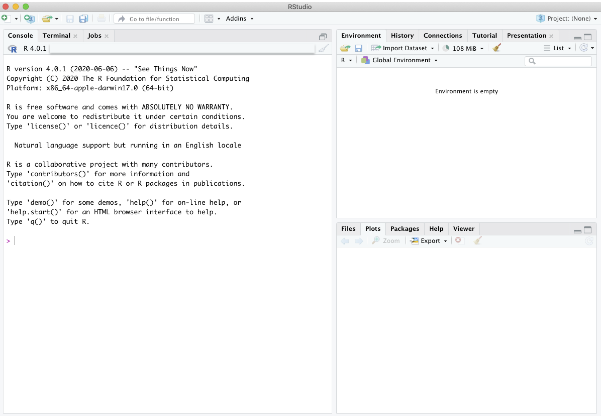
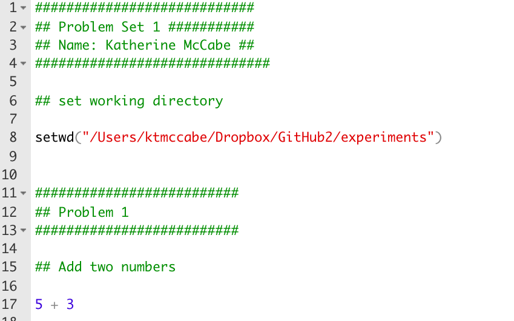
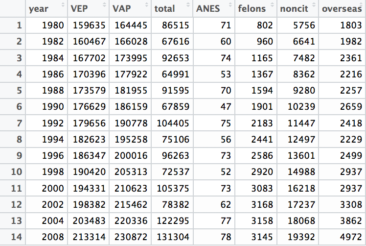

1.2 First Time Working in R and RStudio
This next section provides a few notes on using R and RStudio now that you have installed it. In this section, we cover the following materials:
- Using R as a calculator and assigning objects using
<- - Setting your working directory and the
setwd()function. - Creating and saving an R script
1.2.1 Open RStudio
RStudio is an open-source and free program that greatly facilitates the use of R, especially for users new to programming. Once you have downloaded and installed R and RStudio, to work in R, all you need to do now is open RStudio (it will open R). It should look like this, though your version numbers will be different:

Note: The first time you open RStudio, you likely only have the three windows above. We will want to create a fourth window by opening an R script to create the fourth window.
- To do this, in RStudio, click on File -> New -> R script in your computer’s toolbar. This will open a blank document for text editing in the upper left of the RStudio window. We will return to this window in a moment.
- You can alternatively click on the green + sign indicator in the top-left corner of the RStudio window, which should give you the option to create a new R script document.
Now you should have something that looks like this, similar to Figure 1.1. in QSS:

- The upper-left window has our script document that will contain code.
- The lower-left window is the console. This will show the output of the code we run. We will also be able to type directly in the console.
- The upper-right window shows the environment (and other tabs, such as the history of commands). When we load and store data in RStudio, we will see a summary of that in the environment.
- The lower-right window will enable us to view plots and search help files, among other things.
1.2.2 Using R as a Calculator
The bottom left window in your RStudio is the Console. You can type in this window to use R as a calculator or to try out commands. It will show the raw output of any commands you type. For example, we can try to use R as a calculator. Type the following in the Console (the bottom left window) and hit “enter” or “return” on your keyboard:
5 + 3## [1] 85 - 3## [1] 25^2## [1] 255 * 3## [1] 155/3## [1] 1.666667(5 + 3) * 2## [1] 16In the other RStudio windows, the upper right will show a history of commands that you have sent from the text editor to the R console, along with other items. The lower right will show graphs, help documents and other features. These will be useful later in the course.
1.2.3 Working in an R Script
Earlier, I asked you to open an R script in the upper left window by doing File, then New File, then R Script. Let’s go back to working in that window.
Set your working directory setwd()
(Almost) every time you work in RStudio, the first thing you will do is set your working directory. This is a designated folder in your computer where you will save your R scripts and datasets.
There are many ways to do this.
- An easy way is to go to Session -> Set Working Directory -> Choose Directory. I suggest choosing a folder in your computer that you can easily find and that you will routinely use for this class. Go ahead and create/select it.
- Note: when you selected your directory, code came out in the bottom left Console window. This is the
setwd()command which can also be used directly to set your working directory in the future. - If you aren’t sure where your directory has been set, you can also type
getwd()in your Console. Try it now
## Example of where my directory was
getwd()If I want to change the working directory, I can go to the top toolbar of my computer and use Session -> Set Working Directory -> Choose Directory or just type my file pathway using the setwd() below:
## Example of setting the working directory using setwd().
## Your computer will have your own file path.
setwd("/Users/ktmccabe/Dropbox/Rutgers Teaching/")Saving the R Script
Let’s now save our R script to our working directory and give it an informative name. To do so, go to File, then Save As, make sure you are in the same folder on your computer as the folder you chose for your working directory.
Give the file an informative name, such as: “McCabeWeek1.R”. Note: all of your R scripts will have the .R extension.
1.2.4 Preparing your R script
Now that we have saved our R script, let’s work inside of it. Remember, we are in the top-left RStudio window now.
- Just like the beginning of a paper, you will want to title your R script. In R, any line that you start with a # will not be treated as a programming command. You can use this to your advantage to write titles/comments. Below is a screenshot example of a template R script.
- You can specify your working directory at the top, too. Add your own filepath inside
setwd()

- Then you can start answering problems in the rest of the script.
- Think of the R script as where you write the final draft of your paper. In the Console (the bottom-left window), you can mess around and try different things, like you might when you are taking notes or outlining an essay. Then, write the final programming steps that lead you to your answer in the R script. For example, if I wanted to add 5 + 3, I might try different ways of typing it in the Console, and then when I found out
5 + 3is the right approach, I would type that into my script.
1.2.5 Executing Commands in your R script
The last thing we will note in this initial handout is how to execute commands in your R script.
To run / execute a command in your R script (the upper left window), you can
- Highlight the code you want to run, and then hold down “command + return” on a Mac or “control + enter” on Windows
- Place your cursor at the end of the line of code (far right), and hit “command + return” on a Mac or “control + return” on Windows, or
- Do 1 or 2, but instead of using the keyboard to execute the commands, click “Run” in the top right corner of the upper-left window.
Try it: Type 5 + 3 in the R script. Then, try to execute 5 + 3. It should look something like this:

After you executed the code, you should see it pop out in your Console:
5 + 3## [1] 8
Note: The symbol # also allows for annotation behind commands or on a separate line. Everything that follows # will be ignored by R. You can annotate your own code so that you and others can understand what each part of the code is designed to do.
## Example
sum53 <- 5 + 3 # example of assigning an addition calculation1.2.6 Objects
Sometimes we will want to store our calculations as “objects” in R. We use <- to assign objects by placing it to the left of what we want to store. For example, let’s store the calculation 5 + 3 as an object named sum53:
sum53 <- 5 + 3After we execute this code, sum53 now stores the calculation. This means, that if we execute a line of code that just hassum53`, it will output 8. Try it:
sum53## [1] 8Now we no longer have to type 5 + 3, we can just type sum53. For example, let’s say we wanted to subtract 2 from this calculation. We could do:
sum53 - 2## [1] 6Let’s say we wanted to divide two stored calculations:
ten <- 5 + 5
two <- 1 + 1
ten / two## [1] 5The information stored does not have to be numeric. For example, it can be a word, or what we would call a character string, in which case you need to use quotation marks.
mccabe <- "professor for this course"
mccabe## [1] "professor for this course"Note: Object names cannot begin with numbers and no spacing is allowed. Avoid using special characters such as % and $, which have specific meanings in R. Finally, use concise and intuitive object names.
- GOOD CODE:
practice.calc <- 5 + 3 - BAD CODE:
meaningless.and.unnecessarily.long.name <- 5 + 3
While these are simple examples, we will use objects all the time for more complicated things to store (e.g., like full datasets!) throughout the course.
We can also store an array or “vector” of information using c()
somenumbers <- c(3, 6, 8, 9)
somenumbers## [1] 3 6 8 9Importance of Clean Code
Ideally, when you are done with your R script, you should be able to highlight the entire script and execute it without generating any error messages. This means your code is clean. Code with typos in it may generate a red error message in the Console upon execution. This can happen when there are typos or commands are misused.
For example, R is case sensitive. Let’s say we assigned our object like before:
sum53 <- 5 + 3However, when we went to execute sum53, we accidentally typed Sum53:
Sum53## Error in eval(expr, envir, enclos): object 'Sum53' not foundOnly certain types of objects can be used in mathematical calculations. Let’s say we tried to divide mccabe by 2:
mccabe / 2## Error in mccabe/2: non-numeric argument to binary operatorA big part of learning to use R will be learning how to troubleshoot and detect typos in your code that generate error messages.

1.2.7 Practice with R Scripts
Below is an exercise that will demonstrate you are able to use R as a calculator and create R scripts.
- Create an R script saved as ``LastnameSetup1.R” (use your last name). Within the R script, follow the example from this handout and title the script.
- Set your working directory, and include the file pathway (within
setwd()) at the top of your .R script. - Do the calculation 8 + 3 - 2 in R. Store it as an object with an informative name. Report the answer.
- Do the calculation 5 x 3 in R. Store it as an object with an informative name. Report the answer.
- Add these two calculations together. Note: do this by adding together the objects you created, not the underlying raw calculations. Report the answer.
1.2.8 Loading data into R
Often the variables we care about are stored inside of rectangular datasets, like the dataset on turnout below from QSS Chapter 1.

- These have a number of rows
nrow()and columnsncol() - Each row is an “observation,” representing the information collected from an individual or entity
- Each column is a variable, representing a changing characteristic across multiple observations
When we import a dataset into R, we have a few options. This highlights key elements of QSS section 1.3.5, which provides an overview of loading data into R with an example using UN population data.
Option 1: Download dataset to your computer
- Move the dataset to your working directory
- Identify the file type (e.g., csv, dta, RData, txt)
- Pick the appropriate R function to match the type (e.g.,
read.csv(), read.dta(), load(), read.table()) - Assign the dataset to an object. This object will now be
class()ofdata.frame
## The turnout dataset is available in the week 2 Canvas module
turnout <- read.csv("turnout.csv")With a recent update to R, many people now add an argument to their code when loading in .csv files, which makes it easier to work with categorical variables.
turnout <- read.csv("turnout.csv", stringsAsFactors = T)There are also packages that exist, which simplify loading different types of data. Example:
install.packages("rio", dependencies = T)Once you’ve installed it, you can load the package with library(). While you only need to install the package once, you need to use library() in each script where you use import.
library(rio)
turnout <- import("turnout.csv")Option 2: Read file from a url provided
- Need an active internet connection for this to work
- Need friendly file type
- URL generally must be public
- Include the url inside the function used to read the data
turnout <- read.csv("https://raw.githubusercontent.com/ktmccabe/teachingdata/main/turnout.csv")class(turnout)## [1] "data.frame"You can also open up a window to view the data:
View(turnout)And you can view the first few rows with head()
head(turnout)## year VEP VAP total ANES felons noncit overseas osvoters
## 1 1980 159635 164445 86515 71 802 5756 1803 NA
## 2 1982 160467 166028 67616 60 960 6641 1982 NA
## 3 1984 167702 173995 92653 74 1165 7482 2361 NA
## 4 1986 170396 177922 64991 53 1367 8362 2216 NA
## 5 1988 173579 181955 91595 70 1594 9280 2257 NA
## 6 1990 176629 186159 67859 47 1901 10239 2659 NANote that the columns are the variables, and each row contains the values corresponding to the variables for different units in the data. Here, each row is an election year. In many datasets we will work with, each row will be an experimental subject.
We can access specific columns in the data using the $ attached to the dataframe name. For example, the code below displays all of the values from the year variable in the turnout dataframe:
turnout$year## [1] 1980 1982 1984 1986 1988 1990 1992 1994 1996 1998 2000 2002 2004 2008This will be useful when we want to summarize particular variables, such as by finding the median.
median(turnout$year)## [1] 1993